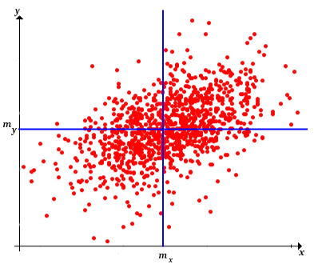
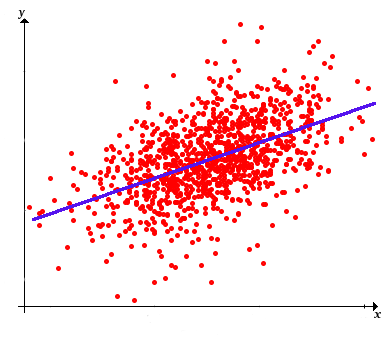
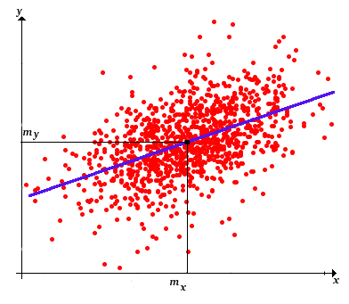
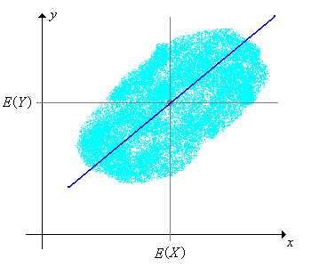
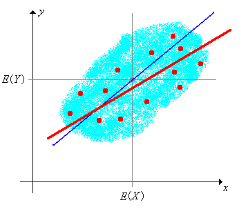

Recall the basic model of statistics: we have a population of objects of interest, and we have various measurements (variables) that we make on these objects. We select objects from the population and record the variables for the objects in the sample; these become our data. Our first discussion is from a purely descriptive point of view. That is, we do not assume that the data are generated by an underlying probability distribution. But as always, remember that the data themselves define a probability distribution, namely the empirical distribution that assigns equal probability to each data point.
Suppose that \(x\) and \(y\) are real-valued variables for a population, and that \(\left((x_1, y_1), (x_2, y_2), \ldots, (x_n, y_n)\right)\) is an observed sample of size \(n\) from \((x, y)\). We will let \(\bs{x} = (x_1, x_2, \ldots, x_n)\) denote the sample from \(x\) and \(\bs{y} = (y_1, y_2, \ldots, y_n)\) the sample from \(y\). In this section, we are interested in statistics that are measures of association between the \(\bs{x}\) and \(\bs{y}\), and in finding the line (or other curve) that best fits the data.
Recall that the sample means are \[ m(\bs{x}) = \frac{1}{n} \sum_{i=1}^n x_i, \quad m(\bs{y}) = \frac{1}{n} \sum_{i=1}^n y_i \] and the sample variances are \[ s^2(\bs{x}) = \frac{1}{n - 1} \sum_{i=1}^n [x_i - m(\bs{x})]^2, \quad s^2(\bs{y}) = \frac{1}{n - 1} \sum_{i=1}^n [y_i - m(\bs{y})]^2 \]
Often, the first step in exploratory data analysis is to draw a graph of the points; this is called a scatterplot an can give a visual sense of the statistical realtionship between the variables.
In particular, we are interested in whether the cloud of points seems to show a linear trend or whether some nonlinear curve might fit the cloud of points. We are interested in the extent to which one variable \(x\) can be used to predict the other variable \(y\).
Our next goal is to define statistics that measure the association between the \(x\) and \(y\) data.
The sample covariance is defined to be \[ s(\bs{x}, \bs{y}) = \frac{1}{n - 1} \sum_{i=1}^n [x_i - m(\bs{x})][y_i - m(\bs{y})] \] Assuming that the data vectors are not constant, so that the standard deviations are positive, the sample correlation is defined to be \[ r(\bs{x}, \bs{y}) = \frac{s(\bs{x}, \bs{y})}{s(\bs{x}) s(\bs{y})} \]
Note that the sample covariance is an average of the product of the deviations of the \(x\) and \(y\) data from their means. Thus, the physical unit of the sample covariance is the product of the units of \( x \) and \( y \). Correlation is a standardized version of covariance. In particular, correlation is dimensionless (has no physical units), since the covariance in the numerator and the product of the standard devations in the denominator have the same units (the product of the units of \(x\) and \(y\)). Note also that covariance and correlation have the same sign: positive, negative, or zero. In the first case, the data \(\bs{x}\) and \(\bs{y}\) are said to be positively correlated; in the second case \(\bs{x}\) and \(\bs{y}\) are said to be negatively correlated; and in the third case \(\bs{x}\) and \(\bs{y}\) are said to be uncorrelated
To see that the sample covariance is a measure of association, recall first that the point \(\left(m(\bs{x}), m(\bs{y})\right)\) is a measure of the center of the bivariate data. Indeed, if each point is the location of a unit mass, then \(\left(m(\bs{x}), m(\bs{y})\right)\) is the center of mass as defined in physics. Horizontal and vertical lines through this center point divide the plane into four quadrants. The product deviation \([x_i - m(\bs{x})][y_i - m(\bs{y})]\) is positive in the first and third quadrants and negative in the second and fourth quadrants. After we study linear regression below in , we will have a much deeper sense of what covariance measures.

You may be perplexed that we average the product deviations by dividing by \(n - 1\) rather than \(n\). The best explanation is that in the probability model discussed below in , the sample covariance is an unbiased estimator of the distribution covariance. However, the mode of averaging can also be understood in terms of degrees of freedom, as was done for sample variance. Initially, we have \(2 n\) degrees of freedom in the bivariate data. We lose two by computing the sample means \(m(\bs{x})\) and \(m(\bs{y})\). Of the remaining \(2 n - 2\) degrees of freedom, we lose \(n - 1\) by computing the product deviations. Thus, we are left with \(n - 1\) degrees of freedom total. As is typical in statistics, we average not by dividing by the number of terms in the sum but rather by the number of degrees of freedom in those terms. However, from a purely descriptive point of view, it would also be reasonable to divide by \(n\).
Recall that there is a natural probability distribution associated with the data, namely the empirical distribution that gives probability \(\frac{1}{n}\) to each data point \((x_i, y_i)\). (Thus, if these points are distinct this is the discrete uniform distribution on the data.) The sample means are simply the expected values of this bivariate distribution, and except for a constant multiple (dividing by \(n - 1\) rather than \(n\)), the sample variances are simply the variances of this bivarite distribution. Similarly, except for a constant multiple (again dividing by \(n - 1\) rather than \(n\)), the sample covariance is the covariance of the bivariate distribution and the sample correlation is the correlation of the bivariate distribution. All of the following results in our discussion of descriptive statistics are actually special cases of more general results for probability distributions.
The next few exercises establish some essential properties of sample covariance. As usual, bold symbols denote samples of a fixed size \(n\) from the corresponding population variables (that is, vectors of length \(n\)), while symbols in regular type denote real numbers. Our first result is a formula for sample covariance that is sometimes better than the definition for computational purposes. To state the result succinctly, let \(\bs{x} \bs{y} = (x_1 \, y_1, x_2 \, y_2, \ldots, x_n \, y_n)\) denote the sample from the product variable \(x y\).
The sample covariance can be computed as follows: \[ s(\bs{x}, \bs{y}) = \frac{1}{n - 1} \sum_{i=1}^n x_i \, y_i - \frac{n}{n - 1} m(\bs{x}) m(\bs{y}) = \frac{n}{n - 1} [m(\bs{x y}) - m(\bs{x}) m(\bs{y})] \]
Note that \begin{align} \sum_{i=1}^n [(x_i - m(\bs{x})][y_i - m(\bs{y})] & = \sum_{i=1}^n [x_i y_i - x_i m(\bs{y}) - y_i m(\bs{x}) + m(\bs{x}) m(\bs{y})] \\ & = \sum_{i=1}^n x_i y_i - m(\bs{y}) \sum_{i=1}^n x_i - m(\bs{x}) \sum_{i=1}^n y_i + n m(\bs{x}) m(\bs{y}) \\ & = \sum_{i=1}^n x_i y_i - n m(\bs{y}) m(\bs{x}) - n m(\bs{x}) m(\bs{y}) + n m(\bs{x})m(\bs{y}) \\ & = \sum_{i=1}^n x_i y_i - n m(\bs{x}) m(\bs{y}) \end{align}
The following theorem gives another formula for the sample covariance, one that does not require the computation of intermediate statistics.
The sample covariance can be computed as follows: \[ s(\bs{x}, \bs{y}) = \frac{1}{2 n (n - 1)} \sum_{i=1}^n \sum_{j=1}^n (x_i - x_j)(y_i - y_j) \]
Note that \begin{align} \sum_{i=1}^n \sum_{j=1}^n (x_i - x_j)(y_i - y_j) & = \frac{1}{2 n} \sum_{i=1}^n \sum_{j=1}^n [x_i - m(\bs{x}) + m(\bs{x}) - x_j][y_i - m(\bs{y}) + m(\bs{y}) - y_j] \\ & = \sum_{i=1}^n \sum_{j=1}^n \left([(x_i - m(\bs{x})][y_i - m(\bs{y})] + [x_i - m(\bs{x})][m(\bs{y}) - y_j] + [m(\bs{x}) - x_j][y_i - m(\bs{y})] + [m(\bs{x}) - x_j][m(\bs{y}) - y_j]\right) \end{align} We compute the sums term by term. The first is \[n \sum_{i=1}^n [x_i - m(\bs{x})][y_i - m(\bs{y})]\] The second two sums are 0. The last sum is \[n \sum_{j=1}^n [m(\bs{x}) - x_j][m(\bs{y}) - y_j] = n \sum_{i=1}^n [x_i - m(\bs{x})][y_i - m(\bs{y})]\] Dividing the entire sum by \(2 n (n - 1)\) results in \(\cov(\bs{x}, \bs{y})\).
As the name suggests, sample covariance generalizes sample variance.
\(s(\bs{x}, \bs{x}) = s^2(\bs{x})\).
In light of , we can now see that the first computational formula in and the second computational formula in above generalize the computational formulas for sample variance. Clearly, sample covariance is symmetric.
\(s(\bs{x}, \bs{y}) = s(\bs{y}, \bs{x})\).
Sample covariance is linear in the first argument with the second argument fixed.
If \(\bs{x}\), \(\bs{y}\), and \(\bs{z}\) are data vectors from population variables \(x\), \(y\), and \(z\), respectively, and if \(c\) is a constant, then
By symmetry, sample covariance is also linear in the second argument with the first argument fixed, and hence is bilinear. The general version of the bilinear property is given in the following theorem:
Suppose that \(\bs{x}_i\) is a data vector from a population variable \(x_i\) for \(i \in \{1, 2, \ldots, k\}\) and that \(\bs{y}_j\) is a data vector from a population variable \(y_j\) for \(j \in \{1, 2, \ldots, l\}\). Suppose also that \(a_1, \, a_2, \ldots, \, a_k\) and \(b_1, \, b_2, \ldots, b_l\) are constants. Then \[ s \left( \sum_{i=1}^k a_i \, \bs{x}_i, \sum_{j = 1}^l b_j \, \bs{y}_j \right) = \sum_{i=1}^k \sum_{j=1}^l a_i \, b_j \, s(\bs{x}_i, \bs{y}_j) \]
A special case of the bilinear property provides a nice way to compute the sample variance of a sum.
\(s^2(\bs{x} + \bs{y}) = s^2(\bs{x}) + 2 s(\bs{x}, \bs{y}) + s^2(\bs{y})\).
From the preceding results, \begin{align} s^2(\bs{x} + \bs{y}) & = s(\bs{x} + \bs{y}, \bs{x} + \bs{y}) = s(\bs{x}, \bs{x}) + s(\bs{x}, \bs{y}) + s(\bs{y}, \bs{x}) + s(\bs{y}, \bs{y}) \\ & = s^2(\bs{x}) + 2 s(\bs{x}, \bs{y}) + s^2(\bs{y}) \end{align}
The generalization of this result to sums of three or more vectors is completely straightforward: namely, the sample variance of a sum is the sum of all of the pairwise sample covariances. Note that the sample variance of a sum can be greater than, less than, or equal to the sum of the sample variances, depending on the sign and magnitude of the pure covariance term. In particular, if the vectors are pairwise uncorrelated, then the variance of the sum is the sum of the variances.
If \(\bs{c}\) is a constant data set then \(s(\bs{x}, \bs{c}) = 0\).
This follows directly from the definition. If \(c_i = c\) for each \(i\), then \(m(\bs{c}) = c\) and hence \(c_i - m(\bs{c}) = 0\) for each \(i\).
Combining the result in the last exercise with the bilinear property in , we see that covariance is unchanged if constants are added to the data sets. That is, if \(\bs{c}\) and \(\bs{d}\) are constant vectors then \(s(\bs{x}+ \bs{c}, \bs{y} + \bs{d}) = s(\bs{x}, \bs{y})\).
A few simple properties of correlation are given next. Most of these follow easily from the corresponding properties of covariance. First, recall that the standard scores of \(x_i\) and \(y_i\) are, respectively, \[ u_i = \frac{x_i - m(\bs{x})}{s(\bs{x})}, \quad v_i = \frac{y_i - m(\bs{y})}{s(\bs{y})} \] The standard scores from a data set are dimensionless quantities that have mean 0 and variance 1.
The correlation between \(\bs{x}\) and \(\bs{y}\) is the covariance of their standard scores \(\bs{u}\) and \(\bs{v}\). That is, \(r(\bs{x}, \bs{y}) = s(\bs{u}, \bs{v})\).
In vector notation, note that \[ \bs{u} = \frac{1}{s(\bs{x})}[\bs{x} - m(\bs{x})], \quad \bs{v} = \frac{1}{s(\bs{y})}[\bs{y} - m(\bs{y})] \] Hence the result follows immediatedly from properties of covariance: \[ s(\bs{u}, \bs{v}) = \frac{1}{s(\bs{x}) s(\bs{y})} s(\bs{x}, \bs{y}) = r(\bs{x}, \bs{y}) \]
Correlation is symmetric.
\(r(\bs{x}, \bs{y}) = r(\bs{y}, \bs{x})\).
Unlike covariance, correlation is unaffected by multiplying one of the data sets by a positive constant (recall that this can always be thought of as a change of scale in the underlying variable). On the other hand, muliplying a data set by a negative constant changes the sign of the correlation.
If \(c \ne 0\) is a constant then
By definition and from the scaling property of covariance in , \[ r(c \bs{x}, \bs{y}) = \frac{s(c \bs{x}, \bs{y})}{s(c \bs{x}) s(\bs{y})} = \frac{c s(\bs{x}, \bs{y})}{\left|c\right| s(\bs{x}) s(\bs{y})} = \frac{c}{\left|c\right|} r(\bs{x}, \bs{y}) \] and of course, \( c / \left|c\right| = 1 \) if \( c \gt 0 \) and \( c / \left|c\right| = -1 \) if \( c \lt 0 \).
Like covariance, correlation is unaffected by adding constants to the data sets. Adding a constant to a data set often corresponds to a change of location.
If \(\bs{c}\) and \(\bs{d}\) are constant vectors then \(r(\bs{x} + \bs{c}, \bs{y} + \bs{d}) = r(\bs{x}, \bs{y})\).
This result follows directly from the corresponding properties of covariance and standard deviation: \[ r(\bs{x} + \bs{c}, \bs{y} + \bs{d}) = \frac{s(\bs{x} + \bs{c}, \bs{y} + \bs{d})}{s(\bs{x} + \bs{c}) s(\bs{y} + \bs{d})} = \frac{s(\bs{x}, \bs{y})}{s(\bs{x}) s(\bs{y})} = r(\bs{x}, \bs{y}) \]
The last couple of properties reinforce the fact that correlation is a standardized measure of association that is not affected by changing the units of measurement. In the first Challenger data set, for example, the variables of interest are temperature at time of launch (in degrees Fahrenheit) and O-ring erosion (in millimeters). The correlation between these variables is of critical importance. If we were to measure temperature in degrees Celsius and O-ring erosion in inches, the correlation between the two variables would be unchanged.
The most important properties of correlation arise from studying the line that best fits the data, our next topic.
We are interested in finding the line \(y = a + b x\) that best fits the sample points \(\left((x_1, y_1), (x_2, y_2), \ldots, (x_n, y_n)\right)\). This is a basic and important problem in many areas of mathematics, not just statistics. We think of \(x\) as the predictor variable and \(y\) as the response variable. Thus, the term best means that we want to find the line (that is, find the coefficients \(a\) and \(b\)) that minimizes the average of the squared errors between the actual \(y\) values in our data and the predicted \(y\) values: \[ \mse(a, b) = \frac{1}{n - 1} \sum_{i=1}^n [y_i - (a + b \, x_i)]^2 \] Note that the minimizing value of \((a, b)\) would be the same if the function were simply the sum of the squared errors, of if we averaged by dividing by \(n\) rather than \(n - 1\), or if we used the square root of any of these functions. Of course that actual minimum value of the function would be different if we changed the function, but again, not the point \((a, b)\) where the minimum occurs. Our particular choice of \(\mse\) as the error function is best for statistical purposes. Finding \((a, b)\) that minimize \(\mse\) is a standard problem in calculus.
The graph of \(\mse\) is a paraboloid opening upward. The function \(\mse\) is minimized when \begin{align} b(\bs{x}, \bs{y}) & = \frac{s(\bs{x}, \bs{y})}{s^2(\bs{x})} \\ a(\bs{x}, \bs{y}) & = m(\bs{y}) - b(\bs{x}, \bs{y}) m(\bs{x}) = m(\bs{y}) - \frac{s(\bs{x}, \bs{y})}{s^2(\bs{x})} m(\bs{x}) \end{align}
We can tell from the algebraic form of \( \mse \) that the graph is a paraboloid opening upward. To find the unique point that minimizes \( \mse \), note that \begin{align} \frac{\partial}{\partial a}\mse(a, b) & = \frac{1}{n - 1} \sum 2[y_i - (a + b x_i)] (-1) = \frac{2}{n - 1} [-\sum_{i=1}^n y_i + n a + b \sum_{i=1}^n x_i ]\\ \frac{\partial}{\partial b}\mse(a, b) & = \frac{1}{n - 1} \sum 2[y_i - (a + b x_i)](-x_i) = \frac{2}{n - 1} [-\sum_{i=1}^n x_i y_i + a \sum_{i=1}^n x_i + b \sum_{i=1}^n x_i^2] \end{align} Solving \( \frac{\partial}{\partial a} \mse(a, b) = 0 \), gives \( a = m(\bs{y}) - b m(\bs{x}) \). Substituting this into \(\frac{\partial}{\partial b} \mse(a, b) = 0 \) and solving for \( b \) gives \[ b = \frac{n[m(\bs{x} \bs{y}) - m(\bs{x}) m(\bs{y})]}{n[m(\bs{x}^2) - m^2(\bs{x})]} \] Dividing the numerator and denominator in the last expression by \( n - 1 \) and using the computational formula above, we see that \( b = s(\bs{x}, \bs{y}) / s^2(\bs{x}) \).
Of course, the optimal values of \(a\) and \(b\) are statistics, that is, functions of the data. Thus the sample regression line is \[ y = m(\bs{y}) + \frac{s(\bs{x}, \bs{y})}{s^2(\bs{x})} [x - m(\bs{x})] \]

Note that the regression line passes through the point \(\left(m(\bs{x}), m(\bs{y})\right)\), the center of the sample of points.

The minimum mean square error is \[ \mse\left[a(\bs{x}, \bs{y}), b(\bs{x}, \bs{y})\right] = s(\bs{y})^2 \left[1 - r^2(\bs{x}, \bs{y})\right] \]
This follows from substituting \( a(\bs{x}, \bs{y}) \) \( b(\bs{x}, \bs{y}) \) into \( \mse \) and simplifying.
Sample correlation and covariance satisfy the following properties.
Note that \( \mse \ge 0 \) and hence from the previous theorem, we must have \( r^2(\bs{x}, \bs{y}) \le 1 \). This is equivalent to part (a), which in turn, from the definition of sample correlation, is equivalent to part (b). For parts (c) and (d), note that \( \mse(a, b) = 0 \) if and only if \( y_i = a + b x_i \) for each \( i \), and moreover, \( b(\bs{x}, \bs{y}) \) has the same sign as \( r(\bs{x}, \bs{y}) \).
Thus, we now see in a deeper way that the sample covariance and correlation measure the degree of linearity of the sample points. Recall from our discussion of measures of center and spread that the constant \(a\) that minimizes \[ \mse(a) = \frac{1}{n - 1} \sum_{i=1}^n (y_i - a)^2 \] is the sample mean \(m(\bs{y})\), and the minimum value of the mean square error is the sample variance \(s^2(\bs{y})\). Thus, the difference between this value of the mean square error and the one in , namely \(s^2(\bs{y}) r^2(\bs{x}, \bs{y})\) is the reduction in the variability of the \(y\) data when the linear term in \(x\) is added to the predictor. The fractional reduction is \(r^2(\bs{x}, \bs{y})\), and hence this statistics is called the (sample) coefficient of determination. Note that if the data vectors \(\bs{x}\) and \(\bs{y}\) are uncorrelated, then \(x\) has no value as a predictor of \(y\); the regression line in this case is the horizontal line \(y = m(\bs{y})\) and the mean square error is \(s^2(\bs{y})\).
The choice of predictor and response variables is important.
The sample regression line with predictor variable \(x\) and response variable \(y\) is not the same as the sample regression line with predictor variable \(y\) and response variable \(x\), except in the extreme case \(r(\bs{x}, \bs{y}) = \pm 1\) where the sample points all lie on a line.
The difference between the actual \(y\) value of a data point and the value predicted by the regression line is called the residual of that data point. Thus, the residual corresponding to \((x_i, y_i)\) is \( d_i = y_i - \hat{y}_i \) where \( \hat{y}_i \) is the regression line at \( x_i \): \[ \hat{y}_i = m(\bs{y}) + \frac{s(\bs{x}, \bs{y})}{s(\bs{x})^2} [x_i - m(\bs{x})] \] Note that the predicted value \(\hat{y}_i\) and the residual \(d_i\) are statistics, that is, functions of the data \((\bs{x}, \bs{y})\), but we are suppressing this in the notation for simplicity.
The residuals sum to 0: \( \sum_{i=1}^n d_i = 0 \).
This follows from the definition, and is a restatement of the fact that the regression line passes through the center of the data set \( \left(m(\bs{x}), m(\bs{y})\right) \).
Various plots of the residuals can help one understand the relationship between the \(x\) and \(y\) data. Some of the more common are given in the following definition:
Residual plots
For our next discussion, we will re-interpret the minimum mean square error formulat in . Here are the new definitions:
Sums of squares
Note that \(\sst(\bs{y})\) is simply \(n - 1\) times the variance \(s^2(\bs{y})\) and is the total of the sums of the squares of the deviations of the \(y\) values from the mean of the \(y\) values. Similarly, \(\sse(\bs{x}, \bs{y})\) is simply \(n - 1\) times the minimum mean square error given above. Of course, \(\sst(\bs{y})\) has \(n - 1\) degrees of freedom, while \(\sse(\bs{x}, \bs{y})\) has \(n - 2\) degrees of freedom and \(\ssr(\bs{x}, \bs{y})\) a single degree of freedom. The total sum of squares is the sum of the regression sum of squares and the error sum of squares:
The sums of squares are related as follows:
By definition of \(\sst\) and \(r\), we see that \(r^2(\bs{x}, \bs{y}) \sst(\bs{y}) = s^2(\bs{x}, \bs{y}) \big/ s^2(\bs{x})\). But from the regression equation, \[ [\hat{y}_i - m(\bs{y})]^2 = \frac{s^2(\bs{x}, \bs{y})}{s^4(\bs{x})} [x_i - m(\bs{x})]^2\] Summing over \(i\) gives \[ \ssr(\bs{x}, \bs{y}) = \sum_{i=1}^n [\hat{y}_i - m(\bs{y})]^2 = \frac{s^2(\bs{x}, \bs{y})}{s^2(\bs{x})} \] Hence \(\ssr(\bs{x}, \bs{y}) = r^2(\bs{x}, \bs{y}) \sst(\bs{y})\). Finally, multiplying the result above by \(n - 1\) gives \(\sse(\bs{x}, \bs{y}) = \sst(\bs{y}) - r^2(\bs{x}, \bs{y}) \sst(\bs{y}) = \sst(\bs{y}) - \ssr(\bs{x}, \bs{y})\).
Note that \(r^2(\bs{x}, \bs{y}) = \ssr(\bs{x}, \bs{y}) \big/ \sst(\bs{y})\), so once again, \(r^2(\bs{x}, \bs{y})\) is the coefficient of determination—the proportion of the variability in the \(y\) data explained by the \(x\) data. We can average \(\sse\) by dividing by its degrees of freedom and then take the square root to obtain a standard error:
The standard error of estimate is \[ \se(\bs{x}, \bs{y}) = \sqrt{\frac{\sse(\bs{x}, \bs{y})}{n - 2}} \]
This really is a standard error in the same sense as a standard deviation. It's an average of the errors of sorts, but in the root mean square sense.
Finally, it's important to note that linear regression is a much more powerful idea than might first appear, and in fact the term linear can be a bit misleading. By applying various transformations to \(y\) or \(x\) or both, we can fit a variety of two-parameter curves to the given data \(\left((x_1, y_1), (x_2, y_2), \ldots, (x_n, y_n)\right)\). Some of the most common transformations are explored in the exercises below in .
We continue our discussion of sample covariance, correlation, and regression but now from the more interesting point of view that the variables are random. Specifically, suppose that we have a basic random experiment, and that \(X\) and \(Y\) are real-valued random variables for the experiment. Equivalently, \((X, Y)\) is a random vector taking values in \(\R^2\). Let \(\mu = \E(X)\) and \(\nu = \E(Y)\) denote the distribution means, \(\sigma^2 = \var(X)\) and \(\tau^2 = \var(Y)\) the distribution variances, and let \(\delta = \cov(X, Y)\) denote the distribution covariance, so that the distribution correlation is \[ \rho = \cor(X, Y) = \frac{\cov(X, Y)}{\sd(X) \, \sd(Y)} = \frac{\delta}{\sigma \, \tau} \] We will also need some higher order moments. Let \(\sigma_4 = \E\left[(X - \mu)^4\right]\), \(\tau_4 = \E\left[(Y - \nu)^4\right]\), and \(\delta_2 = \E\left[(X - \mu)^2 (Y - \nu)^2\right]\). Naturally, we assume that all of these moments are finite.
Now suppose that we run the basic experiment \(n\) times. This creates a compound experiment with a sequence of independent random vectors \(\left((X_1, Y_1), (X_2, Y_2), \ldots, (X_n, Y_n)\right)\) each with the same distribution as \((X, Y)\). In statistical terms, this is a random sample of size \(n\) from the distribution of \((X, Y)\). The statistics discussed in previous section are well defined but now they are all random variables. We use the notation established previously, except that we use our usual convention of denoting random variables with capital letters. Of course, the deterministic properties and relations established the previous subsection still hold. Note that \(\bs{X} = (X_1, X_2, \ldots, X_n)\) is a random sample of size \(n\) from the distribution of \(X\) and \(\bs{Y} = (Y_1, Y_2, \ldots, Y_n)\) is a random sample of size \(n\) from the distribution of \(Y\). The main purpose of this subsection is to study the relationship between various statistics from \(\bs{X}\) and \(\bs{Y}\), and to study statistics that are natural estimators of the distribution covariance and correlation.
Recall that the sample means are \[ M(\bs{X}) = \frac{1}{n} \sum_{i=1}^n X_i, \quad M(\bs{Y}) = \frac{1}{n} \sum_{i=1}^n Y_i \] From the sections on the law of large numbers and the central limit theorem, we know a great deal about the distributions of \(M(\bs{X})\) and \(M(\bs{Y})\) individually. But we need to know more about the joint distribution.
The covariance and correlation between \(M(\bs{X})\) and \(M(\bs{Y})\) are
Part (a) follows from the bilinearity of the covariance operator: \[ \cov\left(\frac{1}{n} \sum_{i=1}^n X_i, \frac{1}{n} \sum_{j=1}^n Y_j\right) = \frac{1}{n^2}\sum_{i=1}^n \sum_{j=1}^n \cov(X_i, Y_j)\] By independence, the terms in the last sum are 0 if \(i \ne j\). For \(i = j\) the terms are \(\cov(X, Y) = \delta\). There are \(n\) such terms so \(\cov[M(\bs{X}), M(\bs{Y})] = \delta / n\). For part (b), recall that \(\var[M(\bs{X})] = \sigma^2 / n\) and \(\var[M(\bs{Y})] = \tau^2 / n\). Hence \[ \cor[M(\bs{X}), M(\bs{Y})] = \frac{\delta / n}{(\sigma / \sqrt{n}) (\tau / \sqrt{n})} = \frac{\delta}{\sigma \tau} = \rho\]
Note that the correlation between the sample means is the same as the correlation of the underlying sampling distribution. In particular, the correlation does not depend on the sample size \(n\).
Recall that special versions of the sample variances, in the unlikely event that the distribution means are known, are \[ W^2(\bs{X}) = \frac{1}{n} \sum_{i=1}^n (X_i - \mu)^2, \quad W^2(\bs{Y}) = \frac{1}{n} \sum_{i=1}^n (Y_i - \nu)^2 \] Once again, we have studied these statistics individually, so our emphasis now is on the joint distribution.
The covariance and correlation between \(W^2(\bs{X})\) and \(W^2(\bs{Y})\) are
For part (a), we use the bilinearity of the covariance operator to obtain \[ \cov[W^2(\bs{X}), W^2(\bs{Y})] = \cov\left(\frac{1}{n} \sum_{i=1}^n (X_i - \mu)^2, \frac{1}{n} \sum_{j=1}^n (Y_j - \nu)^2\right) = \frac{1}{n^2} \sum_{i=1}^n \sum_{j=1}^n \cov[(X_i - \mu)^2, (Y_j - \nu)^2] \] By independence, the terms in the last sum are 0 when \(i \ne j\). When \(i = j\) the terms are \[ \cov[(X - \mu)^2 (Y - \nu)^2] = \E[(X - \mu)^2 (Y - \nu)^2] - \E[(X - \mu)^2] \E[(Y - \nu)^2] = \delta_2 - \sigma^2 \tau^2 \] There are \(n\) such terms, so \(\cov[W^2(\bs{X}), W^2(\bs{Y})] = (\delta_2 - \sigma^2 \tau^2) \big/ n\). Part (b) follows from part (a) and the variances of \(W^2(\bs{X})\) and \(W^2(\bs{Y})\) from the section on Sample Variance.
Note that the correlation does not dependend on the sample size \(n\). Next, recall that the standard versions of the sample variances are \[ S^2(\bs{X}) = \frac{1}{n - 1} \sum_{i=1}^n [X_i - M(\bs{X})]^2, \quad S^2(\bs{Y}) = \frac{1}{n - 1} \sum_{i=1}^n [Y_i - M(\bs{Y})]^2 \]
The covariance and correlation of the sample variances are
Recall that \[ S^2(\bs{X}) = \frac{1}{2 n (n - 1)} \sum_{i=1}^n \sum_{j=1}^n (X_i - X_j)^2, \quad S^2(\bs{Y}) = \frac{1}{2 n (n - 1)} \sum_{k=1}^n \sum_{l=1}^n (Y_k - Y_l)^2 \] Hence using the bilinearity of the covariance operator we have \[ \cov[S^2(\bs{X}), S^2(\bs{Y})] = \frac{1}{4 n^2 (n - 1)^2} \sum_{i=1}^n \sum_{j=1}^n \sum_{k=1}^n \sum_{l=1}^n \cov[(X_i - X_j)^2, (Y_k - Y_l)^2] \] We compute the covariances in this sum by considering disjoint cases:
Substituting and simplifying gives the result in (a). For (b), we use the definition of correlation and the formulas for \(\var[S^2(\bs{X})]\) and \(\var[S^2(\bs{Y})]\) from the section on the sample variance.
Asymptotically, the correlation between the sample variances is the same as the correlation between the special sample variances given in : \[ \cor\left[S^2(\bs{X}), S^2(\bs{Y})\right] \to \frac{\delta_2 - \sigma^2 \tau^2}{\sqrt{(\sigma_4 - \sigma^4)(\tau_4 - \tau^4)}} \text{ as } n \to \infty \]
Suppose first that the distribution means \(\mu\) and \(\nu\) are known. As noted earlier, this is almost always an unrealistic assumption, but is still a good place to start because the analysis is very simple and the results we obtain will be useful below.
A natural estimator of the distsribution covariance \(\delta = \cov(X, Y)\) when the distribution means are known is the special sample covariance \[ W(\bs{X}, \bs{Y}) = \frac{1}{n} \sum_{i=1}^n (X_i - \mu)(Y_i - \nu) \]
Note that the special sample covariance generalizes the special sample variance: \(W(\bs{X}, \bs{X}) = W^2(\bs{X})\).
\(W(\bs{X}, \bs{Y})\) is the sample mean for a random sample of size \(n\) from the distribution of \((X - \mu)(Y - \nu)\) and satisfies the following properties:
These results follow directly from the section on the law of large numbers. For part (b), note that \[ \var[(X - \mu)(Y - \nu)] = \E[(X - \mu)^2 (Y - \nu)^2] - \left(\E[(X - \mu)(Y - \nu)]\right)^2 = \delta_2 - \delta^2 \]
As an estimator of \(\delta\), part (a) means that \(W(\bs{X}, \bs{Y})\) is unbiased and part (b) means that \(W(\bs{X}, \bs{Y})\) is consistent.
Consider now the more realistic assumption that the distribution means \(\mu\) and \(\nu\) are unknown. A natural approach in this case is to average \([(X_i - M(\bs{X})][Y_i - M(\bs{Y})]\) over \(i \in \{1, 2, \ldots, n\}\). But rather than dividing by \(n\) in our average, we should divide by whatever constant gives an unbiased estimator of \(\delta\). As shown in , this constant turns out to be \(n - 1\), leading to the following definition:
The standard sample covariance is \[ S(\bs{X}, \bs{Y}) = \frac{1}{n - 1} \sum_{i=1}^n [X_i - M(\bs{X})][Y_i - M(\bs{Y})] \] The sample correlation is \[ R(\bs{X}, \bs{Y}) = \frac{S(\bs{X}, \bs{Y})}{S(\bs{X}) \, S(\bs{Y})} \]
\(\E[S(\bs{X}, \bs{Y})] = \delta\).
Expanding as above we have, \[ \sum_{i=1}^n[X_i - M(\bs{X})][Y_i - M(\bs{Y})] = \sum_{i=1}^n X_i Y_i - n M(\bs{X})M(\bs{Y}) \] But \(\E(X_i Y_i) = \cov(X_i, Y_i) + \E(X_i) \E(Y_i) = \delta + \mu \nu\). Similarly, from the covariance of the sample means and the unbiased property, \(\E[M(\bs{X}) M(\bs{Y})] = \cov[M(\bs{X}), M(\bs{Y})] + \E[M(\bs{X})] \E[M(\bs{Y})] = \delta / n + \mu \nu\). So taking expected values in the displayed equation above gives \[ \E\left(\sum_{i=1}^n [X_i - M(\bs{X})][Y_i - M(\bs{Y})]\right) = n ( \delta + \mu \nu) - n (\delta / n + \mu \nu) = (n - 1) \delta \]
\(S(\bs{X}, \bs{Y}) \to \delta\) as \(n \to \infty\) with probability 1.
Once again, we have \[ S(\bs{X}, \bs{Y}) = \frac{n}{n - 1} [M(\bs{X} \bs{Y}) - M(\bs{X}) M(\bs{Y})] \] where \(M(\bs{X} \bs{Y})\) denotes the sample mean for the sample of the products \((X_1 Y_1, X_2 Y_2, \ldots, X_n Y_n)\). By the strong law of large numbers, \(M(\bs{X}) \to \mu\) as \(n \to \infty\), \(M(\bs{Y}) \to \nu\) as \(n \to \infty\), and \(M(\bs{X} \bs{Y}) \to \E(X Y) = \delta + \mu \nu\) as \(n \to \infty\), each with probability 1. So the result follows by letting \(n \to \infty\) in the displayed equation.
Since the sample correlation \(R(\bs{X}, \bs{Y})\) is a nonlinear function of the sample covariance and sample standard deviations, it will not in general be an unbiased estimator of the distribution correlation \(\rho\). In most cases, it would be difficult to even compute the mean and variance of \(R(\bs{X}, \bs{Y})\). Nonetheless, we can show convergence of the sample correlation to the distribution correlation.
\(R(\bs{X}, \bs{Y}) \to \rho\) as \(n \to \infty\) with probability 1.
This follows immediately from the strong law of large numbers and previous results. From \(S(\bs{X}, \bs{Y}) \to \delta\) as \(n \to \infty\), and from the section on the sample variance, \(S(\bs{X}) \to \sigma\) as \(n \to \infty\) and \(S(\bs{Y}) \to \tau\) as \(n \to \infty\), each with probability 1. Hence \(R(\bs{X}, \bs{Y}) \to \delta / \sigma \tau = \rho\) as \(n \to \infty\) with probability 1.
Theorem next gives a formuala for the variance of the sample covariance, not to be confused with the covariance of the sample variances given in !
The variance of the sample covariance is \[ \var[S(\bs{X}, \bs{Y})] = \frac{1}{n} \left( \delta_2 + \frac{1}{n - 1} \sigma^2 \, \tau^2 - \frac{n - 2}{n - 1} \delta^2 \right) \]
Recall first that \[ S(\bs{X}, \bs{Y}) = \frac{1}{2 \, n \, (n - 1)} \sum_{i=1}^n \sum_{j=1}^n (X_i - X_j)(Y_i - Y_j) \] Hence using the bilinearity of the covariance operator we have \[ \var[S(\bs{X}), \bs{Y})] = \frac{1}{4 n^2 (n - 1)^2} \sum_{i=1}^n \sum_{j=1}^n \sum_{k=1}^n \sum_{l=1}^n \cov[(X_i - X_j)(Y_i - Y_j), (X_k - X_l)(Y_k - Y_l)] \] We compute the covariances in this sum by considering disjoint cases:
Substituting and simplifying gives the result
It's not surprising that the variance of the standard sample covariance (where we don't know the distribution means) is greater than the variance of the special sample covariance (where we do know the distribution means).
\(\var[S(\bs{X}, \bs{Y})] \gt \var[W(\bs{X}, \bs{Y})]\).
From results above, and some simple algebra, \[ \var[S(\bs{X}, \bs{Y})] - \var[W(\bs{X}, \bs{Y})] = \frac{1}{n (n - 1)}(\delta^2 + \sigma^2 \tau^2) \gt 0 \] But note that the difference goes to 0 as \(n \to \infty\).
\(\var[S(\bs{X}, \bs{Y})] \to 0\) as \(n \to \infty\) and hence the sample covariance is a consistent estimator of the distribution covariance.
In our first discussion in , we studied regression from a deterministic, descriptive point of view. The results obtained applied only to the sample. Statistically more interesting and deeper questions arise when the data come from a random experiment, and we try to draw inferences about the underlying distribution from the sample regression. There are two models that commonly arise. One is where the response variable is random, but the predictor variable is deterministic. The other is the model we consider here, where the predictor variable and the response variable are both random, so that the data form a random sample from a bivariate distribution.
Thus, suppose again that we have a basic random vector \((X, Y)\) for an experiment. Recall that in the section on (distribution) correlation and regression, we showed that the best linear predictor of \(Y\) given \(X\), in the sense of minimizing mean square error, is the random variable \[ L(Y \mid X) = \E(Y) + \frac{\cov(X, Y)}{\var(X)}[X - \E(X)] = \nu + \frac{\delta}{\sigma^2}(X - \mu) \] so that the distribution regression line is given by \[ y = L(Y \mid X = x) = \nu + \frac{\delta}{\sigma^2}(x - \mu) \] Moreover, the (minimum) value of the mean square error is \(\E\{[Y - L(Y \mid X)]\} = \var(Y)[1 - \cor^2(X, Y)] = r^2 (1 - \rho^2)\).

Of course, in real applications, we are unlikely to know the distribution parameters \(\mu\), \(\nu\), \(\sigma^2\), and \(\delta\). If we want to estimate the distribution regression line, a natural approach would be to consider a random sample \(\left((X_1, Y_1), (X_2, Y_2), \ldots, (X_n, Y_n)\right)\) from the distribution of \((X, Y)\) and compute the sample regression line. Of course, the results are exactly the same as in the discussion in above, except that all of the relevant quantities are random variables.
The sample regression line is \[ y = M(\bs{Y}) + \frac{S(\bs{X}, \bs{Y})}{S^2(\bs{X})}[x - M(\bs{X})] \] The mean square error is \(S^2(\bs{Y})[1 - R^2(\bs{X}, \bs{Y})]\) and the coefficient of determination is \(R^2(\bs{X}, \bs{Y})\).

The fact that the sample regression line and mean square error are completely analogous to the distribution regression line and mean square error is mathematically elegant and reassuring. Again, the coefficients of the sample regression line can be viewed as estimators of the respective coefficients in the distribution regression line.
The coefficients of the sample regression line converge to the coefficients of the distribution regression line with probability 1.
This follows from the strong law of large numbers and previous results. with probability 1, \(S(\bs{X}, \bs{Y}) \to \delta\) as \(n \to \infty\), \(S^2(\bs{X}) \to \sigma^2\) as \(n \to \infty\), \(M(\bs{X}) \to \mu\) as \(n \to \infty\), and \(M(\bs{Y}) \to \nu\) as \(n \to \infty\).
Of course, if the linear relationship between \(X\) and \(Y\) is not strong, as measured by the sample correlation, then transformation applied to one or both variables may help. Again, some typical transformations are explored in the subsection below.
Suppose that \( x \) and \( y \) are population variables, and \( \bs{x} \) and \( \bs{y} \) samples of size \( n \) from \( x \) and \( y \) respectively. Suppose also that \( m(\bs{x}) = 3 \), \( m(\bs{y}) = -1 \), \( s^2(\bs{x} ) = 4\), \( s^2(\bs{y}) = 9 \), and \( s(\bs{x}, \bs{y}) = 5 \). Find each of the following:
Suppose that \(x\) is the temperature (in degrees Fahrenheit) and \(y\) the resistance (in ohms) for a certain type of electronic component after 10 hours of operation. For a sample of 30 components, \(m(\bs{x}) = 113\), \(s(\bs{x}) = 18\), \(m(\bs{y}) = 100\), \(s(\bs{y}) = 10\), \(r(\bs{x}, \bs{y}) = 0.6\).
Suppose now that temperature is converted to degrees Celsius (the transformation is \(\frac{5}{9}(x - 32)\)).
Suppose that \(x\) is the length and \(y\) the width (in inches) of a leaf in a certain type of plant. For a sample of 50 leaves \(m(\bs{x}) = 10\), \(s(\bs{x}) = 2\), \(m(\bs{y}) = 4\), \(s(\bs{y}) = 1\), and \(r(\bs{x}, \bs{y}) = 0.8\).
Suppose now that \(x\) and \(y\) are converted to inches (0.3937 inches per centimeter).
Click in the interactive scatterplot, in various places, and watch how the means, standard deviations, correlation, and regression line change.
Click in the interactive scatterplot to define 20 points and try to come as close as possible to each of the following sample correlations:
Click in the interactive scatterplot to define 20 points. Try to generate a scatterplot in which the regression line has
Run the bivariate uniform experiment 2000 times in each of the following cases. Compare the sample means to the distribution means, the sample standard deviations to the distribution standard deviations, the sample correlation to the distribution correlation, and the sample regression line to the distribution regression line.
Run the bivariate normal experiment 2000 times for various values of the distribution standard deviations and the distribution correlation. Compare the sample means to the distribution means, the sample standard deviations to the distribution standard deviations, the sample correlation to the distribution correlation, and the sample regression line to the distribution regression line.
Consider the function \(y = a + b x^2\).
Consider the function \(y = \frac{1}{a + b x}\).
Consider the function \(y = \frac{x}{a + b x}\).
Consider the function \(y = a e^{b x}\).
Consider the function \(y = a x^b\).
All statistical software packages will perform regression analysis. In addition to the regression line, most packages will typically report the coefficient of determination \(r^2(\bs{x}, \bs{y})\), the sums of squares \(\sst(\bs{y})\), \(\ssr(\bs{x}, \bs{y})\), \(\sse(\bs{x}, \bs{y})\), and the standard error of estimate \(\se(\bs{x}, \bs{y})\). Most packages will also draw the scatterplot, with the regression line superimposed, and will draw the various graphs of residuals discussed above. Many packages also provide easy ways to transform the data. Thus, there is very little reason to perform the computations by hand, except with a small data set to master the definitions and formulas. In the following problem, do the computations and draw the graphs with minimal technological aids.
Suppose that \(x\) is the number of math courses completed and \(y\) the number of science courses completed for a student at Enormous State University (ESU). A sample of 10 ESU students gives the following data: \(\left((1, 1), (3, 3), (6, 4), (2, 1), (8, 5), (2, 2), (4, 3), (6, 4), (4, 3), (4, 4)\right)\).
Construct a table with rows corresponding to cases and columns corresponding to \(i\), \(x_i\), \(y_i\), \(x_i - m(\bs{x})\), \(y_i - m(\bs{y})\), \([x_i - m(\bs{x})]^2\), \([y_i - m(\bs{y})]^2\), \([x_i - m(\bs{x})][y_i - m(\bs{y})]\), \(\hat{y}_i\), \(\hat{y}_i - m(\bs{y})\), \([\hat{y}_i - m(\bs{y})]^2\), \(y_i - \hat{y}_i\), and \((y_i - \hat{y}_i)^2\). Add a rows at the bottom for totals and means. Use precision arithmetic.
| \(i\) | \(x_i\) | \(y_i\) | \(x_i - m(\bs{x})\) | \(y_i - m(\bs{y})\) | \([x_i - m(\bs{x})]^2\) | \([y_i - m(\bs{y})]^2\) | \([x_i - m(\bs{x})][y_i - m(\bs{y})]\) | \(\hat{y}_i\) | \(\hat{y}_i - m(\bs{y})\) | \([\hat{y}_i - m(\bs{y})]^2\) | \(y_i - \hat{y}_i\) | \((y_i - \hat{y}_i)^2\) |
|---|---|---|---|---|---|---|---|---|---|---|---|---|
| 1 | 1 | 1 | \(-3\) | \(-2\) | \(9\) | \(4\) | \(6\) | \(9/7\) | \(-12/7\) | \(144/49\) | \(-2/7\) | \(4/49\) |
| 2 | 3 | 3 | \(-1\) | \(0\) | \(1\) | \(0\) | \(0\) | \(17/7\) | \(-4/7\) | \(16/49\) | \(4/7\) | \(16/49\) |
| 3 | 6 | 4 | \(2\) | \(1\) | \(4\) | \(1\) | \(2\) | \(29/7\) | \(8/7\) | \(64/49\) | \(-1/7\) | \(1/49\) |
| 4 | 2 | 1 | \(-2\) | \(-2\) | \(4\) | \(4\) | \(4\) | \(13/7\) | \(-8/7\) | \(64/49\) | \(-6/7\) | \(36/49\) |
| 5 | 8 | 5 | \(4\) | \(2\) | \(16\) | \(4\) | \(8\) | \(37/7\) | \(16/7\) | \(256/49\) | \(-2/7\) | \(4/49\) |
| 6 | 2 | 2 | \(-2\) | \(-1\) | \(4\) | \(1\) | \(2\) | \(13/7\) | \(-8/7\) | \(64/49\) | \(1/7\) | \(1/49\) |
| 7 | 4 | 3 | \(0\) | \(0\) | \(0\) | \(0\) | \(0\) | \(3\) | \(0\) | \(0\) | \(0\) | \(0\) |
| 8 | 6 | 4 | \(2\) | \(1\) | \(4\) | \(1\) | \(2\) | \(29/7\) | \(8/7\) | \(64/49\) | \(-1/7\) | \(1/49\) |
| 9 | 4 | 3 | \(0\) | \(0\) | \(0\) | \(0\) | \(0\) | \(3\) | \(0\) | \(0\) | \(0\) | \(0\) |
| 10 | 4 | 4 | \(0\) | \(1\) | \(0\) | \(1\) | \(0\) | \(3\) | \(0\) | \(0\) | \(1\) | \(1\) |
| Total | \(40\) | \(30\) | \(0\) | \(0\) | \(42\) | \(16\) | \(24\) | \(30\) | \(0\) | \(96/7\) | \(0\) | \(16/7\) |
| Mean | \(4\) | \(3\) | \(0\) | \(0\) | \(14/3\) | \(16/9\) | \(8/3\) | \(3\) | \(0\) | \(96/7\) | \(0\) | \(2/7\) |
The following two exercise should help you review some of the probability topics in this section.
Suppose that \((X, Y)\) has a continuous distribution with probability density function \(f(x, y) = 15 x^2 y\) for \(0 \le x \le y \le 1\). Find each of the following:
Suppose now that \(\left((X_1, Y_1), (X_2, Y_2), \ldots (X_9, Y_9)\right)\) is a random sample of size \(9\) from the distribution in the previous exercise. Find each of the following:
Use statistical software for the following problems.
Consider the height variables in Pearson's height data.
Consider the petal length, petal width, and species variables in Fisher's iris data.
Consider the number of candies and net weight variables in the M&M data.
Consider the response rate and total SAT score variables in the SAT by state data set.
Consider the verbal and math SAT scores (for all students) in the SAT by year data set.
Consider the temperature and erosion variables in the first data set in the Challenger data.